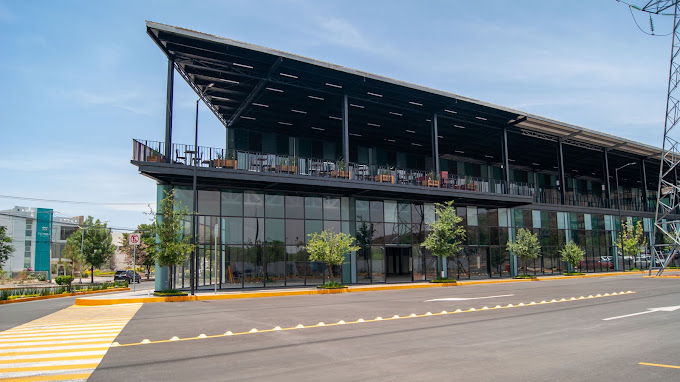

XTO Realty Group México Reporte primeras 48 horas
Estudio de Mercado Inmobiliario — Zyriane Towers, Irapuato, Guanajuato
Uso mixto vertical (torre de oficinas de usos múltiples + tres torres residenciales).
Resumen Ejecutivo
Veredicto Estratégico
- La demanda más sólida y comprobable está en el uso residencial vertical para parejas jóvenes y jóvenes profesionistas, y en los consultorios médicos; la demanda hotelera y de oficinas corporativas clase A es la más débil. Irapuato no tiene mercado formal de oficinas clase A rastreado por ningún broker, y su ocupación hotelera promedio (33.9%, DataTur a oct-2025) es de las más bajas del Bajío.
- El riesgo de inseguridad es el factor crítico que atraviesa todo el proyecto: según Marcela Figueroa Franco, titular del SESNSP (Mañanera del 14-jul-2026), Guanajuato encabezó los homicidios dolosos del país en el 1S2026 con 789 víctimas (8.8% del total nacional), pese a una caída del 68% en el promedio diario desde febrero 2025; la extorsión al comercio sigue alta. Esto deprime precios y penaliza los usos que dependen de flujo peatonal y pernocta de foráneos (hotel, comercio a pie de calle, oficinas).
- Recomendación central: reponderar el programa hacia residencial vertical + consultorios médicos + coworking ligero, tratando el hotel y las oficinas corporativas puras como componentes de alto riesgo que exigen anclas contractuales previas (operador hotelero de marca, contrato médico institucional) antes de comprometer metros cuadrados.
Key Findings — Veredictos de Demanda
Componente 1 — Torre de oficinas de usos múltiples
Componente 2 — Tres torres residenciales
Evaluación de Desempeño
Potencial de Demanda por Componente
Análisis a Detalle
Contexto demográfico y urbano (CONFIRMADO — INEGI, IPLANEG, CONAPO)
Irapuato tiene 592,953 habitantes (Censo INEGI 2020), 2º municipio más poblado de Guanajuato (9.62% del estado), con 302,183 mujeres y 290,770 hombres. Densidad de 696.7 hab/km² sobre 851.1 km². La edad mediana es de 28 años —población joven, favorable para producto vertical—. La tasa de crecimiento anual 2010–2020 fue de 1.2% (CONFIRMADO, "Visión en Cifras" IPLANEG/INEGI). En 2020 había 123,449 niñas y niños (20.8%) y 409,113 mayores de 18 años (69%).
El patrón de urbanización es expansivo y disperso: entre 1980 y 2018 la población creció 2.3 veces pero la mancha urbana 5.9 veces (CONFIRMADO, PMDUOET/IPLANEG), con ocupación de baja densidad hacia la periferia. La expansión reciente se orienta a la zona norte (nuevos desarrollos como Haciendas Residencial Irapuato de Artigas Arquitectos —FUENTE CON INCENTIVO COMERCIAL: contenido patrocinado en Periódico AM—). Esto refuerza que la redensificación vertical en zonas centrales y en el eje norte es coherente con la política urbana municipal (PMDUOET/IMPLAN Irapuato; Plan Municipal de Desarrollo 2050).
Migración: los flujos hacia Irapuato son moderados. El Censo 2020 registró como principales orígenes migratorios internacionales EE.UU. (767), Japón (216) y Colombia (107), con causas familiares, económicas y de vivienda (CONFIRMADO, Data México/INEGI). No hay evidencia de una ola migratoria interna masiva reciente. La población flotante corporativa (directivos y técnicos del corredor industrial) es un grupo real pero no cuantificado a nivel Irapuato (VACÍO DE DATOS).
Seguridad — riesgo crítico (CONFIRMADO — SESNSP; CONVERGENTE — Coparmex/Canaco)
Según Marcela Figueroa Franco, titular del SESNSP, en la Mañanera del Pueblo del 14-jul-2026, Guanajuato encabezó los homicidios dolosos del país en el 1S2026 con 789 víctimas (8.8% del total nacional), seguido de Baja California (731, 8.1%) y Chihuahua (704, 7.8%). Simultáneamente, el promedio diario cayó de 12.7 homicidios (febrero 2025) a 4.0 (junio 2026) —una reducción interanual del 50.9% en el semestre, la 5ª mayor del país—. Es decir, coexisten dos realidades: mejora acelerada de la tendencia, pero volumen absoluto todavía #1 nacional.
En Irapuato la violencia es tangible: el 24 de junio de 2025 un tiroteo masivo en un festival dejó 12 muertos y 20 heridos (CONFIRMADO). La extorsión es el problema más corrosivo para el uso comercial/oficinas: Guanajuato se mantiene 6º nacional en víctimas de extorsión; Coparmex ubica al estado con índice de extorsión "alto" (60.1, 8ª posición); en 2025 se registraron 3,028 extorsiones con una caída de apenas 3.7% en 2026; cámaras empresariales reportan el cierre de al menos 30 negocios por cobro de piso (CONVERGENTE — Coparmex, Canaco, Concanaco). Cinco de cada 10 empresas socias de Coparmex han sido víctimas de al menos un delito.
Implicación inmobiliaria: la literatura de precios hedónicos confirma que la inseguridad deprime precios de vivienda en el corredor industrial. Para Zyriane, la inseguridad: (1) favorece el producto vertical con acceso controlado y amenidades seguras (ventaja competitiva del "búnker urbano" con servicios internos); (2) penaliza fuertemente los usos que dependen de flujo peatonal y pernocta de foráneos (hotel, comercio a pie de calle); y (3) exige comunicar la seguridad como atributo central de marca y de valuación.
Vivienda: precios, crédito y verticalización
Precio de vivienda en Guanajuato +8.4% anual en 1T2026 (Índice SHF, CONFIRMADO), ligeramente por debajo del promedio nacional de 8.7%; León +8.2%. Guanajuato figura entre los estados con mayor actividad hipotecaria (10–11 mil MDP, BBVA Research 1S2026), y junto con Querétaro y otras entidades del Bajío-Occidente concentra una parte creciente del crédito. A nivel nacional predomina la adquisición de vivienda usada con crédito.
Tasas: Banxico cerró su ciclo de recortes en 6.50% (decisión del 7-mayo-2026, vigente desde el 8-mayo), el punto más bajo desde el máximo de 11.25% de 2023. Sin embargo, el traspaso a hipotecas es limitado: según el Área de Estudios Económicos de BBVA México, "Las tasas de interés hipotecarias han mostrado cierta rigidez a la baja, de tal forma que las tasas implícitas de la cartera siguen ubicándose cerca del 10.0 por ciento anual" (Reporte Mensual de Banca y Sistema Financiero, vía Diario, 16-jul-2026); la tasa hipotecaria promedio en México cerró diciembre 2025 en 11.54% con un CAT de 14%, según el Banco de México. Por banco, las tasas fijas van de 9.90% (Inbursa) a 11.50% (HSBC). BBVA anticipa que la demanda de crédito seguirá desacelerándose por la debilidad del empleo formal. Esto encarece el ticket para el comprador de menores ingresos y favorece el mercado de renta y el producto de inversión (buy-to-rent).
Precios de departamentos en Irapuato (SEÑAL — portales con sesgo de oferta, no transacción): renta de producto nuevo en zona norte ~$20,000–25,000 MXN/mes; venta de departamentos desde $728,000 hasta $5,000,000+ MXN; en Villas de Irapuato (segmento alto), departamentos ~$3.27M de venta y ~$14,638 de renta.
Verticalización: el Bajío sigue dominado por vivienda horizontal (en León ~82% del mercado es casa horizontal; sólo ~18% departamentos), pero la vivienda vertical crece entre jóvenes profesionistas, solteros y parejas jóvenes (CONVERGENTE — Inmuebles24, Expansión, Periódico AM). En León el segmento vertical más dinámico es el de $700,000–$2,000,000 MXN dirigido a jóvenes profesionales y ejecutivos, "sin saturación" según operadores locales, mientras que el alto residencial ($4M+) se percibe cerca de la saturación. Lectura para Zyriane: el sweet spot de demanda vertical está en unidades compactas de 1–2 recámaras y ticket medio, no en departamentos grandes de lujo.
Componente oficinas — los cuatro usos
(a) Consultorios médicos — DEMANDA FUERTE. Irapuato concentra una masa crítica de hospitales privados con consultorios: Hospital MAC Irapuato (torre de 11 pisos, 172 consultorios), Hospital Centro Médico Irapuato (39 especialidades, +14 años de operación), Hospital Ciudad Médica, Clínica María Reyna Gineco-Pediatría, Clínica de Maternidad Guadalupana, más el Hospital General y unidades IMSS/ISSSTE. El gremio médico crece a nivel estatal: el IMSS Guanajuato sumó más de 300 especialistas en 2026 y las plazas de residencia médica nacionales pasaron de 3,500 (2018) a ~9,800 (2026); Guanajuato cuenta con más de 630 unidades médicas y ~4,000 médicas y médicos en el sistema estatal (CONVERGENTE — IMSS/gobierno estatal). La demanda de consultorios modernos con estacionamiento y ubicación clínica es estructural y con capacidad de pago (el médico es un grupo social con solidez de compra/renta). Es el ancla más defendible de la torre.
(b) Coworking — DEMANDA MODERADA. Existe demanda real pero acotada. Operadores confirmados en Irapuato: Regus/IWG (centro Cardinal, Av. Guerrero, zona Santa Fe) y Bajío Coworking (local, frente al Tec de Monterrey). No hay presencia de IOS Offices (su sede más cercana es León), WeWork ni Vinco. Tarifas: Bajío Coworking $3,000–$3,500 MXN+IVA/mes por escritorio (hot desk / fijo), oficinas privadas de $5,000 a $14,500 MXN+IVA/mes; Regus desde ~US$199/mes escritorio dedicado y ~US$215/persona/mes oficina privada. No hay datos públicos de ocupación (VACÍO). El perfil objetivo (freelancers, startups, trabajadores remotos y personal del nearshoring) existe, pero es un mercado incipiente que soporta un componente de coworking ligero, no una gran planta.
(c) Oficinas corporativas clase A/B — DEMANDA DÉBIL / INSUFICIENTE EVIDENCIA. Hallazgo determinante: Irapuato NO tiene inventario formal de oficinas clase A rastreado por CBRE, JLL, Colliers, Solili ni Newmark. Estos brokers cubren el Bajío únicamente para el segmento industrial. El único mercado corporativo formal del corredor es León, que sirve de proxy: según la plataforma Solili, al cierre de agosto 2025 la renta promedio de oficinas en León fue de US$9.62/m²/mes, "50% por debajo" del promedio nacional (corredor Campestre–Country US$9.49; López Mateos US$10.23), y Solili reportó (1-jul-2026) que "la tasa de vacancia de oficinas en León aumenta 1.4 puntos porcentuales en el último año". León concentra los nuevos proyectos de oficina del Bajío (~46% del pipeline regional según Líder Empresarial). Es decir: la demanda corporativa formal del corredor gravita hacia León, no hacia Irapuato, y sus rentas están entre las más bajas del país —señal de mercado poco profundo—. Un componente de oficina corporativa pura en Irapuato es el uso de mayor riesgo de vacancia.
(d) Hotel — DEMANDA DÉBIL-MODERADA. La ocupación hotelera promedio de Irapuato fue 33.9% a octubre 2025 (DataTur, vía Periódico AM), posición #24–26 entre los destinos del interior del país, por debajo de León (42.3%), Querétaro (58.4%) y Chihuahua (60.6%). Según Raúl González, presidente de la Asociación de Hoteles y Moteles de Irapuato (Periódico Correo, 8-jun-2026), la ciudad cuenta con 3,300 habitaciones disponibles y el turismo deportivo eleva la ocupación puntual hasta el 70% en eventos, contrastando con el promedio anual de 33.9%. El segmento es casi exclusivamente de negocios (City Express by Marriott Irapuato, 104 hab.; City Express Irapuato Norte, 122 hab.), anclado en INFORUM, la Expo Agroalimentaria/ExpoFresas y los parques industriales (Castro del Río, Apolo, Mazda), con el aeropuerto BJX a ~34 min. No hay ADR/RevPAR público verificado; sólo tarifas "desde" de OTA de ~US$48–58/noche, que no equivalen a ADR. Conclusión: demanda hotelera existente pero de baja ocupación estructural y sin evidencia de escasez de cuartos que justifique un componente hotelero nuevo de gran escala.
Componente residencial — los tres perfiles
Perfil 1 (estudiantes/solteros recién independizados) — DEMANDA MODERADA-FUERTE, redefinida. La matrícula universitaria en Irapuato es moderada: la Universidad de Guanajuato tuvo ~30,300 matriculados en 2022, de los cuales 2,414 en el municipio de Irapuato y 3,162 en Salamanca (la División de Ingenierías del campus Irapuato-Salamanca está físicamente en Salamanca). Operan además el ITESI y universidades privadas (Tec de Monterrey campus Irapuato, entre otras). Buena parte del estudiantado es local, lo que limita la demanda de vivienda estudiantil foránea pura. El nicho verdaderamente sólido de este perfil no es el estudiante universitario foráneo, sino el joven profesionista soltero (25–35) del nearshoring y de los servicios, que valora movilidad, amenidades y ubicación. No hay datos publicados de renta estudiantil en Irapuato (VACÍO).
Perfil 2 (familias de 4 con niños) — DEMANDA MODERADA con fricción cultural. En el Bajío la familia con hijos sigue prefiriendo casa horizontal con jardín; el departamento para familia de 4 es el segmento de mayor resistencia cultural y el de absorción más lenta. Es viable como complemento minoritario del mix, no como núcleo.
Perfil 3 (parejas jóvenes/recién casados) — DEMANDA FUERTE. Es el perfil que nacionalmente y en el Bajío está adoptando el departamento (movilidad, flexibilidad, amenidades, seguridad). Coincide con la ventana de formación de hogares, con el producto vertical de 1–2 recámaras y con el segmento de ticket medio ($700K–$2M) que los operadores de León reportan sin saturación. Debe ser el núcleo del componente residencial.
Empleo, IED y nearshoring (CONFIRMADO — Secretaría de Economía)
La IED de Guanajuato cayó 46% en 2025, a 774 MDD desde 1,442 MDD en 2024, descendiendo del 6º al 10º lugar nacional (CONFIRMADO — Secretaría de Economía, vía Periódico AM/El Pípila). La titular de Economía estatal lo calificó de "tormenta perfecta" (aranceles al acero/aluminio, desabasto en cadenas de suministro, desaceleración automotriz). Guanajuato tiene 47 parques industriales en 17 municipios; el corredor Irapuato-Abasolo es uno de los polos; el sector automotriz genera >70% de la demanda industrial del Bajío. Matiz crítico: la tesis de "nearshoring que llena oficinas y hoteles" debe moderarse fuertemente —la IED se contrajo y el empleo formal se desaceleró (crecimiento ~1.1%)—, lo que reduce la demanda derivada de oficinas corporativas y hotel de negocios en el corto plazo. La demanda derivada del nearshoring que sí se sostiene es la de vivienda (compra y renta) para el personal técnico y profesional que permanece en la región.
Recommendations
Escenarios de ejecución
Reponderar la torre de usos múltiples con consultorios médicos como ancla principal (demanda fuerte y comprobada), complementados con un coworking ligero, y enfocar las tres torres residenciales en parejas jóvenes y jóvenes profesionistas (unidades compactas de 1–2 recámaras, ticket medio). Eliminar o posponer el hotel; reducir la oficina corporativa pura. Umbral que confirma la decisión: firma de un contrato de anclaje médico por ≥40% de los m² de consultorios en preventa.
Mantener el hotel sólo si se asegura un operador de marca (Marriott/City Express, IHG) bajo contrato de administración o franquicia, con un feasibility independiente que muestre ocupación estabilizada ≥50% y ADR verificado. Sin ese ancla, convertir los pisos de hotel en extended-stay / serviced apartments para población flotante corporativa, que combina mejor con el residencial y con la baja ocupación hotelera estructural de la ciudad.
Si la absorción de oficinas corporativas resulta insuficiente —lo más probable dado que Irapuato carece de mercado clase A—, reconvertir esos m² a más departamentos y a un zócalo de servicios médicos/farmacia/laboratorio. Es la ruta más robusta ante la caída de IED y la debilidad corporativa.
Pasos concretos inmediatos:
- Levantar un estudio de campo de absorción residencial por micro-zona (norte vs. centro) y de ocupación real de los coworkings locales —datos que hoy no existen públicamente—.
- Encargar un feasibility hotelero independiente con datos STR/DataTur comprados antes de comprometer cualquier m² de hotel.
- Validar el contrato de anclaje médico antes de dimensionar los consultorios.
- Diseñar la seguridad (acceso controlado, separación de flujos, amenidades internas) como atributo central de marca y de valuación —convierte el principal riesgo de la plaza en ventaja competitiva del producto vertical—.
- Estructurar una oferta explícita buy-to-rent para inversionistas, aprovechando que las hipotecas ~10% empujan a la población hacia la renta.
Datos y referencias por confirmar
- No existe mercado formal de oficinas clase A en Irapuato rastreado por brokers; toda cifra corporativa usa León como proxy del corredor (renta ~US$9.62/m²/mes ago-2025, Solili).
- No hay ADR/RevPAR público verificado para Irapuato; sólo tarifas "desde" de OTA (~US$48–58/noche, no equivalen a ADR) y una cifra de inventario de 3,300 habitaciones aportada por la asociación hotelera local.
- No hay datos de ocupación de coworkings locales ni de absorción residencial por micro-zona; requieren levantamiento en campo o compra a Softec/Tinsa/4S Real Estate.
- No hay datos publicados de demanda de vivienda estudiantil en Irapuato.
- Los precios de departamentos provienen de portales (Trovit, Vivanuncios, Propiedades.com): reflejan oferta, no transacción; deben corroborarse con avalúos/cierres reales.
- Las cifras de matrícula UG son de 2022 (última desagregación municipal disponible en Data México); el número exacto de consultorios/médicos por hospital privado en Irapuato no está consolidado en fuente oficial (VACÍO).
- Fuentes con incentivo comercial (desarrolladores, inmobiliarias, contenido patrocinado, operadores de coworking) marcadas como SEÑAL a lo largo del documento.
- La proyección CONAPO municipal específica de Irapuato al 2030 existe (Portal Social Guanajuato / CONAPO 2020–2040) pero no se pudo desagregar el dato puntual en esta fase; se recomienda extraerlo del dataset municipal para el modelo financiero.
- Dato a monitorear que cambiaría el análisis: una recuperación de la IED estatal en 2026 (meta oficial de alcanzar 50% del objetivo sexenal) reactivaría la demanda corporativa y hotelera y podría reponderar los escenarios B/C.